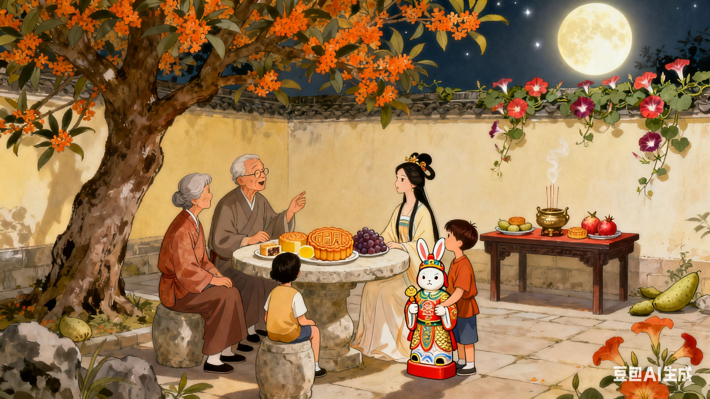

中秋节：月满中秋，阖家团圆
中秋节在农历八月十五，此时正值秋季的中期，故称为 “中秋”。中秋节以月之圆兆人之团圆，是中华民族象征团圆的传统节日，其习俗充满了温馨与诗意。 中秋节的起源可追溯至上古时期的 “祭月” 活动，到了唐代，中秋赏月、玩月成为了流行的习俗，宋代时，中秋节正式成为固定的节日，明清时期，中秋节的习俗更加盛行，与春节、清明节、端午节并称为中国四大传统节日。 中秋节的核心习俗是 “赏月”。每到中秋之夜，月亮圆满明亮，人们会团聚在庭院中，摆上月饼、瓜果、酒水等，一边赏月，一边聊天，感受团圆的幸福。赏月的习俗不仅体现了人们对自然美景的欣赏，更蕴含着对阖家团圆的期盼。在古代，文人墨客们还会在中秋之夜吟诗作赋，留下了许多脍炙人口的中秋诗句，如 “但愿人长久，千里共婵娟”（苏轼《水调歌头・明月几时有》）、“举头望明月，低头思故乡”（李白《静夜思》）等，这些诗句为中秋节增添了浓厚的文化底蕴。 “吃月饼” 是中秋节必不可少的习俗。月饼象征着团圆，其外形圆润，内馅丰富，有五仁、豆沙、莲蓉、蛋黄、鲜肉等多种口味。不同地区的月饼各具特色，如广式月饼皮薄馅足、口感细腻，苏式月饼酥皮层次分明、咸甜适中，京式月饼口感酥脆、味道香甜。中秋节吃月饼，不仅是一种美食享受，更是对团圆的象征与期盼。 此外，中秋节还有 “祭月”“走月亮”“玩兔儿爷” 等习俗。“祭月” 是古代中秋节的重要活动，人们会在庭院中设案，摆放月饼、瓜果等祭品，向月亮祭拜，祈求月神保佑家人平安、幸福；“走月亮” 是江南地区的习俗，中秋之夜，人们会结伴在月光下行走，欣赏月色，感受节日的氛围；“玩兔儿爷” 是北京地区的习俗，兔儿爷是一种泥塑玩具，造型可爱，象征着吉祥如意，深受孩子们的喜爱。